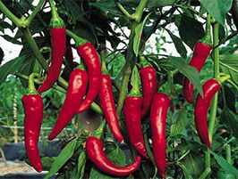
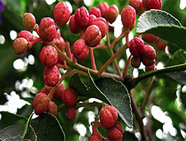
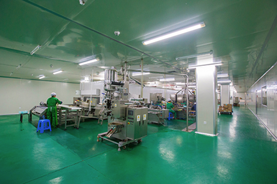
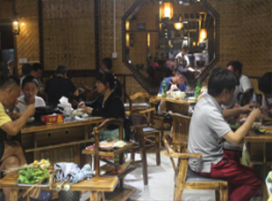
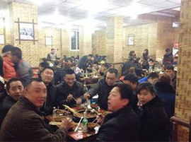
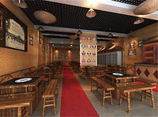

品牌优势
作为全国串串香加盟行业的领导品牌，灌县老妈砂锅串串香用自身的实力不断地影响着串串香行业发展，当然除了品牌的知名度较高之外，灌县老妈还具有如下的优势：
1、行业内唯一一家拥有自己的原料生产基地，并且都是使用无污染有机肥料进行培养
- 
- 
2、拥有自己的底料生产厂，并且灌县老妈生产厂的卫生安全标准比国家规定的安全标准更严格，为的就是生产出更放心的原料；

3、独立的物流配送系统，以最快速度将原料配送至全国各地的加盟商；
4、加盟培训体系完善，灌县老妈制定了自己独特的培训课程，严格的培训要求力求我们每一位加盟商都能够做出只有灌县老妈才有的美味的砂锅串串香；
5、专业的开店投资分析团队，让加盟商不在孤军奋战。灌县老妈的投资分析团队会从选址到后期经营全方位的做出精准的分析，力求让加盟商在最短的周期内盈利；
- 
- 
6、灌县老妈多年的坚持已经积攒起了超高人气和良好口碑，从一定程度上减少了加盟商开业宣传的压力。
- 